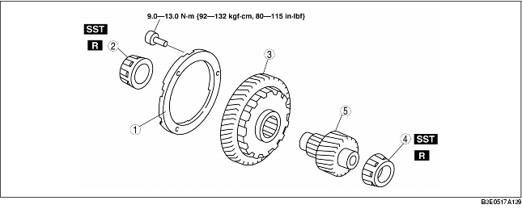
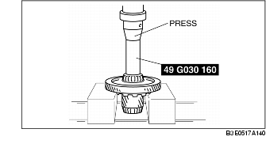
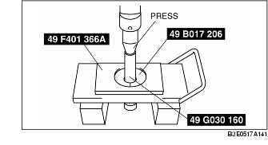
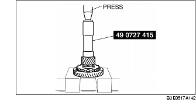
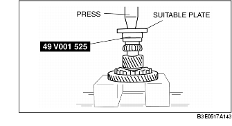
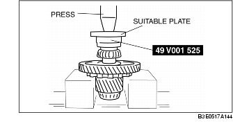

Secondary gear and output gear disassembly/assembly
1. Disassemble in the order indicated in the table.
2. Assemble in the reverse order of disassembly.

|
1
|
Ring
|
|
2
|
Bearing
(See Bearing Disassembly Note.)
|
|
3
|
Secondary gear
|
|
4
|
Bearing
(See Bearing Disassembly Note.)
|
|
5
|
Output gear
|
Bearing Disassembly Note
1. Remove the bearing (secondary gear side) from the output gear using the SST.

2. Remove the bearing (output gear side) from the output gear using the SST.

Assembly Procedure
1. Install the output gear to the secondary gear using the SST.

2. Install the bearing (output gear side) to the output gear using the SST and suitable plate.

3. Install the bearing (secondary gear side) to the output gear using the SST and suitable plate.
